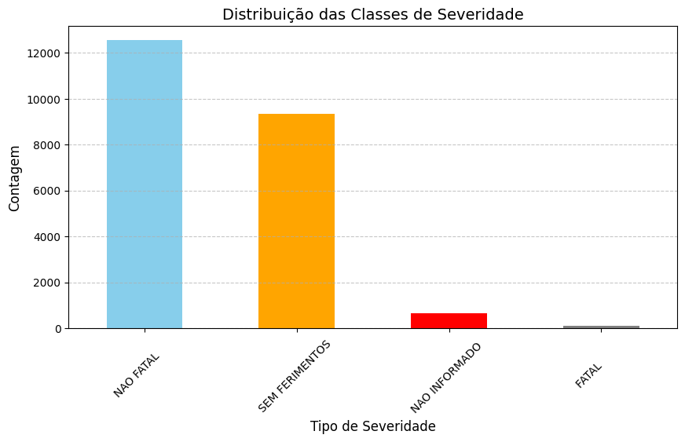
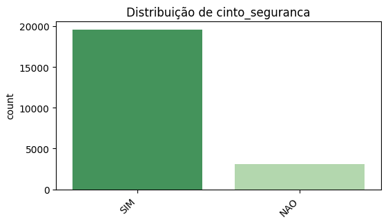

Análise Exploratória de Dados (EDA)
A etapa de EDA teve como objetivo entender a estrutura dos dados de acidentes de trânsito fornecidos pelo DETRAN em 2020. Foram exploradas distribuições, outliers, valores faltantes e balanceamento da base para garantir qualidade na construção do modelo preditivo.
Limpeza e Qualidade dos Dados
- Presença de valores ausentes na coluna
pedestree na colunapassageiro(~10%), tratados com exclusão ou preenchimento condicional. - Alguns registros com idade igual a 0 ou negativa foram removidos por não representarem valores válidos.
- A coluna
data_hora_boletimfoi convertida para tipodatetimepara permitir análises temporais como distribuição por hora. - Valores inconsistentes como
"NAO INFORMADO"foram filtrados na variável-alvo para evitar ruído na modelagem.
Balanceamento da Base
A base apresenta um desbalanceamento importante entre as classes de severidade, como mostra o gráfico abaixo:
Distribuição das Classes de Severidade
- A classe “FATAL” representa uma minoria, exigindo estratégias como
SMOTEouundersampling. - A classe “NAO INFORMADO” foi removida para evitar viés na avaliação do modelo.
Principais Padrões Detectados
- Maior gravidade em casos sem uso de cinto de segurança.
Distribuição por Uso de Cinto de Segurança
 - Casos de embriaguez, apesar de menos frequentes, estão mais associados a acidentes fatais.
Distribuição de Embriaguez e Severidade

- Acidentes ocorrem com maior frequência entre 17h e 19h.
Distribuição de Acidentes por Hora

Insights Quantitativos
- Variáveis como idade e número de envolvidos foram analisadas por boxplots e quartis por severidade.
- Criação de nova feature
hora_acidentea partir dedata_hora_boletim. - Um mapa de correlação mostrou que o não uso do cinto, embriaguez e número de envolvidos têm correlação positiva com maior severidade.
Mapa de Correlação entre Variáveis

Conclusões da EDA
A análise exploratória revelou a necessidade de limpeza, padronização e balanceamento dos dados. Também foi essencial para identificar variáveis-chave na severidade dos acidentes, como uso de cinto, embriaguez e idade. Essas descobertas guiaram o processo de engenharia de atributos e escolha dos modelos preditivos.